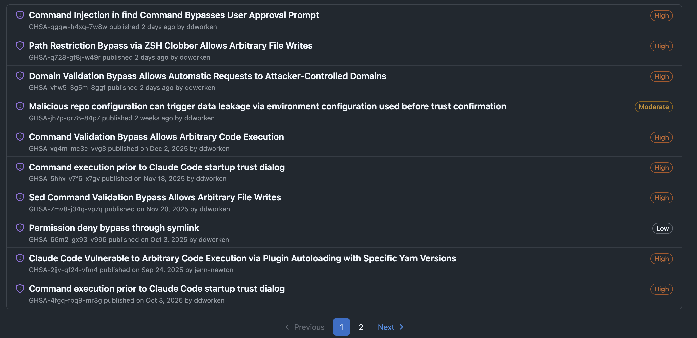

How I'm using Claude — and what are you doing?
👋 Welcome! Follow along on your own screen.
We'll go through my workflow, then hear from everyone.
Selcan Aydin, PhD — Munger Lab
Carter Lab Meeting, 02/11/2025
Start by explaining what you're trying to accomplish. Ask for potential solutions with explanations of trade-offs and approaches.
Ask for code implementation or generation of example outputs to validate the approach before committing.
Request inline comments or text explanations to clarify the logic of generated code — helpful for future you and teammates.
After making manual edits, paste the code back for a final review to catch typos, logical errors, or inconsistencies.
Example: A typical 4-step conversation for a DESeq2 analysis question
→ Live demo: [Presenter will show Claude response]
Claude Code is Anthropic's CLI tool for agentic coding — it can read, write, and execute code directly in your terminal.
Agentic tools that execute code come with risks. Recent security advisories for Claude Code:

Keep Claude Code updated, review commands before approving, and be cautious with untrusted repositories.